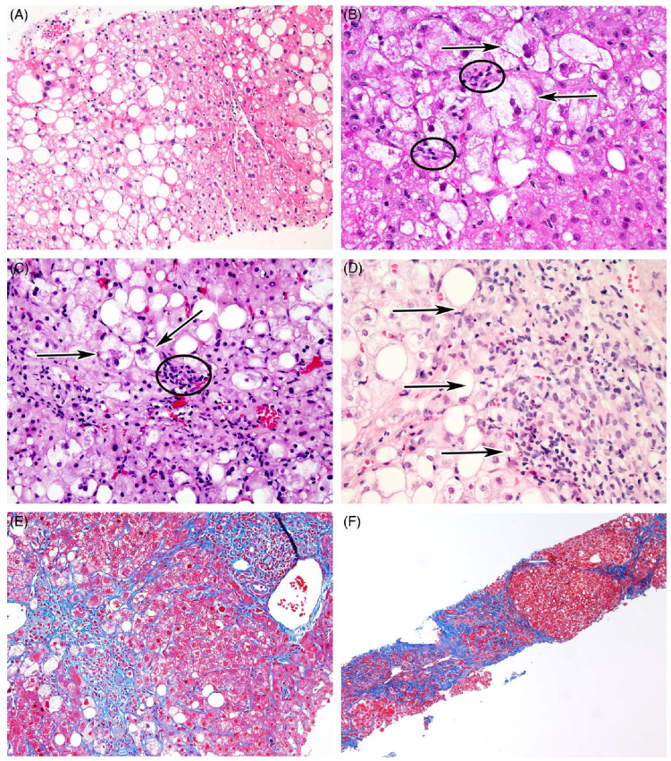

SINH LÝ BỆNH & CƠ CHẾ BỆNH SINH BỆNH GAN NHIỄM MỠ CHUYỂN HÓA (MASLD / MASH)
Metabolic Dysfunction-Associated Steatotic Liver Disease (MASLD / MASH / MAFLD / NAFLD) — Phân tích chi tiết động học mất cân bằng thu nhận - đào thải lipid, cơ chế kháng insulin đa cơ quan (Tri-organ IR), độc tính lipid (Lipotoxicity), stress mạng lưới nội chất & ty thể, trục ruột - gan, đột biến gen nhạy cảm PNPLA3/TM6SF2, sinh bệnh học thể gầy (Lean MASLD), phổ giải phẫu bệnh và đích tác động phân tử của các liệu pháp dược lý mới.
Bệnh gan nhiễm mỡ liên quan đến rối loạn chức năng chuyển hóa (MASLD/MASH) hiện là bệnh lý gan mạn tính phổ biến nhất trên toàn cầu, ảnh hưởng đến hơn 30% dân số trưởng thành và là nguyên nhân hàng đầu dẫn đến xơ gan giai đoạn cuối, ung thư biểu mô tế bào gan (HCC) cũng như chỉ định ghép gan. Vượt ra khỏi phạm vi một bệnh lý khu trú tại gan, MASLD thực chất là biểu hiện tại gan của tình trạng rối loạn chuyển hóa – tim mạch hệ thống, bắt nguồn từ sự mất cân bằng giữa quá trình thu nhận và xử lý lipid của tế bào gan dưới tác động của kháng insulin, độc tính lipid (lipotoxicity), stress bào quan và phản ứng viêm xơ hóa mạn tính.
Phần I: Tổng Quan & Sự Dịch Chuyển Thuật Ngữ Danh Pháp Đồng Thuận Quốc Tế
Trong nhiều thập kỷ, thuật ngữ Bệnh gan nhiễm mỡ không do rượu (NAFLD) được sử dụng như một chẩn đoán loại trừ (loại trừ nguyên nhân tiêu thụ cồn). Tuy nhiên, để phản ánh chính xác bản chất sinh bệnh học là rối loạn chuyển hóa hệ thống và tránh sự kỳ thị từ ngữ (stigma), các hiệp hội gan mật quốc tế (AASLD, EASL, ALEH, APASL) đã thống nhất chuẩn hóa danh pháp mới:
1. MASLD (Đồng Thuận Đa Hội 2023–2026)
Metabolic Dysfunction-Associated Steatotic Liver Disease: Được xác định khi có tình trạng nhiễm mỡ gan ≥ 5% tế bào gan (qua sinh thiết mô học hoặc chẩn đoán hình ảnh như CAP/MRI-PDFF) kết hợp với ít nhất 1 trong 5 yếu tố nguy cơ tim mạch – chuyển hóa (Cardiometabolic Risk Factors - CMRF):
- BMI ≥ 25 kg/m2 (≥ 23 ở người châu Á) hoặc vòng eo ≥ 94 cm (nam), ≥ 80 cm (nữ).
- Đường huyết đói ≥ 100 mg/dL hoặc HbA1c ≥ 5.7% hoặc ĐTĐ típ 2 đang điều trị.
- Huyết áp ≥ 130/85 mmHg hoặc đang dùng thuốc hạ áp.
- Triglyceride huyết tương ≥ 150 mg/dL hoặc đang điều trị hạ lipid.
- HDL-C < 40 mg/dL (nam), < 50 mg/dL (nữ).
2. MAFLD (Khuyến Cáo APASL 2025)
Metabolic Dysfunction-Associated Fatty Liver Disease: Là một "chẩn đoán bao hàm" (diagnosis of inclusion) độc lập với lượng cồn tiêu thụ, dựa trên sự hiện diện của nhiễm mỡ gan kết hợp với 1 trong 3 nhóm chuyển hóa: (1) Thừa cân/Béo phì, (2) Đái tháo đường típ 2, hoặc (3) Cân nặng bình thường (thể gầy) có ít nhất 2 bất thường chuyển hóa.
3. MASH (Thay Thế Thuật Ngữ NASH)
Metabolic Dysfunction-Associated Steatohepatitis: Là thể bệnh hoạt động và tiến triển nặng của MASLD, đặc trưng trên mô học bởi sự kết hợp của: Nhiễm mỡ gan + Thoái hóa tế bào gan dạng bong bóng (Ballooning) + Viêm tiểu thùy gan. MASH là động lực cốt lõi dẫn đến xơ hóa gan tiến triển, xơ gan và ung thư tế bào gan (HCC).
Phần II: Động Học Mất Cân Bằng Thu Nhận – Đào Thải Lipid & Kháng Insulin Đa Cơ Quan
Tế bào gan bình thường duy trì trạng thái cân bằng nội môi lipid hoàn hảo giữa dòng thu nhận axit béo (Lipid Acquisition) và dòng đào thải/sử dụng năng lượng (Lipid Disposal). Nhiễm mỡ gan xảy ra khi cán cân này bị phá vỡ nghiêm trọng:
Dòng Thu Nhận Axit Béo Vào Gan (TĂNG MẠNH)
- Phân giải mỡ mô mỡ (Adipose Lipolysis — Đóng góp ~60% bể FFA gan): Tình trạng kháng insulin tại mô mỡ làm mất khả năng ức chế enzyme Hormone-Sensitive Lipase (HSL). Triglyceride dự trữ tại mô mỡ bị phân giải ồ ạt thành Axit Béo Tự Do (FFAs) giải phóng liên tục vào máu tuần hoàn và đổ thẳng về gan qua tĩnh mạch cửa.
- Sinh tổng hợp lipid mới tại gan (De Novo Lipogenesis - DNL — Đóng góp ~25–30%): Năng lượng dư thừa từ carbohydrate (đặc biệt là đường đơn Fructose và Sucrose) kích hoạt các yếu tố phiên mã nhân tế bào SREBP-1c (thông qua tăng insulin máu) và ChREBP (thông qua nồng độ fructose/glucose cao), thúc đẩy tế bào gan tự tổng hợp axit béo bão hòa từ carbon không lipid.
- Chất béo từ chế độ ăn (Dietary Chylomicrons — Đóng góp ~15%): Lượng mỡ dư thừa hấp thu qua ruột theo hệ bạch huyết về gan dưới dạng tàn dư chylomicron.
Dòng Đào Thải & Xử Lý Lipid Tại Gan (QUÁ TẢI / SUY GIẢM)
- Oxy hóa Beta ty thể (Mitochondrial β-oxidation): Axit béo tự do được vận chuyển qua màng ty thể (nhờ enzyme CPT-1) để đi vào chu trình oxy hóa beta tạo ATP. Khi lượng FFA đổ về quá lớn, chuỗi hô hấp tế bào ty thể bị quá tải, gây ứ đọng axit béo và rò rỉ các gốc oxy hóa tự do (ROS).
- Bài xuất Lipoprotein tỷ trọng rất thấp (VLDL): Tế bào gan este hóa axit béo thành Triglyceride, kết hợp với Apolipoprotein B100 để đóng gói thành hạt VLDL bài xuất ra máu. Khi tốc độ tổng hợp triglyceride vượt ngưỡng khả năng đóng gói VLDL, mỡ sẽ tích tụ lại trong bào tương dưới dạng các giọt lipid lớn gây Nhiễm mỡ dạng bong bóng lớn (Macrovesicular Steatosis).
Cơ Chế Kháng Insulin Đa Cơ Quan (Tri-Organ Insulin Resistance)
1. Kháng Insulin tại Mô Mỡ (Adipose Tissue IR) & Phì Đại Mỡ Nội Tạng
Kháng insulin tại mô mỡ làm mất ức chế HSL → phóng thích liên tục dòng FFAs. Sự tích tụ mỡ nội tạng (Visceral Fat / Mỡ mạc treo) có hoạt tính sinh học viêm rất cao, thu hút đại thực bào M1 tạo thành các cấu trúc dạng vương miện (crown-like structures), giải phóng hàng loạt cytokine tiền viêm (TNF-α, IL-6) đổ thẳng vào tĩnh mạch cửa đến gan. Ngược lại, mỡ dưới da vùng đùi/hông (gynoid fat) có tính an toàn sinh học cao hơn.
2. Kháng Insulin tại Cơ Xương (Skeletal Muscle IR) & Teo Cơ (Sarcopenia)
Cơ xương tiêu thụ >70% lượng glucose sau ăn. Kháng insulin làm suy giảm sự dịch chuyển kênh vận chuyển GLUT4 lên màng tế bào cơ → dòng glucose dư thừa bị chuyển hướng về gan làm cơ chất cho quá trình DNL. Hội chứng giảm khối cơ (Sarcopenia) và thoái hóa mỡ trong cơ (Myosteatosis) làm giảm chuyển hóa cơ bản, trực tiếp làm trầm trọng thêm kháng insulin toàn thân và xơ hóa gan.
3. Kháng Insulin tại Gan (Hepatic IR) & Nghịch Lý Sinh Mỡ (Selective Hepatic IR)
Ở gan kháng insulin, xảy ra một nghịch lý chuyển hóa: Tác dụng ức chế tân tạo đường (Gluconeogenesis) của insulin bị mất đi → gan liên tục sản xuất glucose gây tăng đường huyết đói; tuy nhiên, con đường kích thích sinh tổng hợp lipid mới (DNL) qua SREBP-1c lại được duy trì và tăng cường mạnh mẽ bởi tình trạng tăng nồng độ insulin máu mạn tính (Hyperinsulinemia).
Phần III: Độc Tính Lipid (Lipotoxicity), Stress Bào Quan & Con Đường Tiến Triển MASH
Sự tích tụ triglyceride đơn thuần là cơ chế bảo vệ tạm thời của tế bào gan nhằm "bẫy" các axit béo tự do độc hại vào các giọt mỡ trơ. Tuy nhiên, khi dung lượng lưu trữ triglyceride an toàn bị vượt ngưỡng, axit béo bão hòa dư thừa (như Palmitate) sẽ đi vào các con đường chuyển hóa độc hại sinh ra các Lipid Độc Tế Bào (Lipotoxic Lipids) bao gồm: Diacylglycerols (DAG), Ceramides, Lysophosphatidylcholine và Axit phosphatidic.
1. Rối Loạn Ty Thể & Stress Oxy Hóa
Axit béo tự do gây đục thủng màng ty thể, làm suy giảm phức hợp chuỗi truyền điện tử (ETC Complex I & III), tạo ra cơn bão gốc oxy hóa tự do (ROS). Stress oxy hóa gây peroxy hóa lipid màng, tổn thương DNA ty thể và kích hoạt mở kênh chuyển tiếp tính thấm (mPTP) giải phóng Cytochrome C.
2. Stress Mạng Lưới Nội Chất (ER Stress) & UPR
Tích tụ lipid độc làm biến đổi màng phospholipid của mạng lưới nội chất, làm rò rỉ Canxi nội bào và tích tụ protein lỗi nếp gấp. Tế bào gan khởi động Phản ứng protein không gấp nếp (UPR) qua 3 nhánh cảm biến (IRE1α, PERK, ATF6). Khi ER stress kéo dài, UPR chuyển sang hoạt hóa dòng thác JNK kinase và CHOP, trực tiếp kích hoạt quá trình chết tế bào theo chương trình (Apoptosis).
3. Suy Giảm Thực Bào Mỡ (Impaired Lipophagy)
Thực bào mỡ (Lipophagy) là quá trình tế bào gan tự phân hủy các giọt lipid trong lysosome. Trong MASLD/MASH, sự điều hòa ngược của các protein liên quan đến autophagy và suy giảm chức năng lysosome làm ứ đọng các bào quan ty thể bị hỏng (mitophagy khiếm khuyết), giải phóng các mẫu phân tử liên quan đến tổn thương (DAMPs).
4. Kích Hoạt Thể Viêm NLRP3 & Tạo Xơ (Fibrogenesis)
DAMPs, ROS và cholesterol tinh thể nội bào kích hoạt Thể viêm NLRP3 (NLRP3 Inflammasome) trên tế bào Kupffer và tế bào gan → giải phóng ồ ạt IL-1β, IL-18, TNF-α. Các cytokine này cùng với TGF-β kích hoạt các Tế bào hình sao gan (Hepatic Stellate Cells - HSCs) chuyển dạng từ trạng thái nghỉ thành các nguyên bào sợi cơ (myofibroblasts), tăng sinh tổng hợp Collagen type I & III lắng đọng quanh xoang gan và khoảng cửa → Xơ gan (Cirrhosis).
Phần IV: Các Yếu Tố Điều Biến Bệnh Sinh Hệ Thống & Cơ Chế Thể Gầy (Lean MASLD)
1. Nền Tảng Đa Hình Di Truyền (Genetic Polymorphisms)
| Gene & Đột biến | Chức năng sinh lý | Cơ chế bệnh sinh phân tử | Tác động lâm sàng & Dân tộc |
|---|---|---|---|
| PNPLA3 (rs738409) I148M (C>G) |
Mã hóa Adiponutrin có hoạt tính lipase phân giải triglyceride giọt mỡ | Đột biến I148M làm mất hoạt tính lipase và ức chế sự tiếp cận của các enzyme phân giải khác, "giam hãm" lipid trong tế bào gan | Yếu tố nguy cơ di truyền mạnh nhất; tăng gấp 2–3 lần nguy cơ MASH, xơ hóa và HCC. Rất phổ biến ở người Châu Á và gốc Tây Ban Nha |
| TM6SF2 (rs58542926) E167K |
Điều hòa quá trình đóng gói và bài xuất hạt VLDL từ gan | Đột biến E167K làm giảm bài xuất VLDL → mỡ ứ đọng trong gan nhưng nồng độ lipid máu lại giảm | Tăng nguy cơ nhiễm mỡ và xơ hóa gan nhưng có tác dụng bảo vệ nghịch lý chống lại bệnh tim mạch xơ vữa |
| MBOAT7 (rs641738) | Tái cấu trúc phospholipid màng tế bào giàu phosphatidylinositol | Làm giảm hàm lượng axit arachidonic trong màng, thay đổi tính thấm màng và thúc đẩy phản ứng viêm xơ hóa | Gia tăng mức độ nặng của viêm gan nhiễm mỡ và tiến triển xơ gan |
| HSD17B13 (rs72613567) Đột biến Bảo vệ |
Enzyme retinol dehydrogenase gắn trên bề mặt giọt lipid | Đột biến mất chức năng (loss-of-function) làm mất biểu hiện protein trên giọt mỡ | Hiệu ứng bảo vệ gan: Giảm nguy cơ tiến triển từ nhiễm mỡ đơn thuần sang MASH, giảm 30–50% nguy cơ xơ gan và ung thư gan |
2. Trục Ruột – Gan, Nội Độc Tố (Endotoxemia) & Sinh Bệnh Học Thể Gầy (Lean MASLD)
Trục Ruột – Gan & Loạn Khuẩn Ruột (Gut Dysbiosis)
Chế độ ăn nhiều calo, mỡ bão hòa và fructose làm suy giảm các chủng vi khuẩn sản xuất axit béo chuỗi ngắn có lợi (như Faecalibacterium prausnitzii sản xuất Butyrate), phá hủy liên kết vòng bịt (tight junctions) của niêm mạc ruột.
Nội độc tố Lipopolysaccharide (LPS) từ vách vi khuẩn Gram âm rò rỉ vào tĩnh mạch cửa đến gan, gắn vào thụ thể TLR4 trên tế bào Kupffer và tế bào hình sao gan (HSC), kích hoạt con đường tín hiệu NF-κB thúc đẩy phản ứng viêm mạn tính và xơ hóa gan.
Bí Ẩn Sinh Bệnh Học Thể Gầy (Lean MASLD)
Chiếm tới 15–20% ca bệnh tại Châu Á ở những người có BMI hoàn toàn bình thường (< 23 kg/m2). Những bệnh nhân này có đặc điểm:
- Tỷ lệ mang biến thể di truyền PNPLA3 I148M cực cao.
- Phân bố mỡ lệch tâm: Tăng mỡ nội tạng (visceral fat) kèm teo cơ (sarcopenia).
- Tình trạng rò rỉ nội độc tố vi khuẩn mạn tính gây Tái lập chương trình biểu hiện gen ngoại di truyền (Epigenetic Reprogramming: Methyl hóa DNA & Biến đổi Histone), làm tế bào gan mất khả năng thích ứng chuyển hóa, khiến tốc độ xơ hóa diễn ra nhanh và khó lường hơn so với người béo phì.
Phần V: Mối Liên Hệ Giữa Gan Nhiễm Mỡ & Biến Cố Tim Mạch – Chuyển Hóa
Nguyên nhân tử vong hàng đầu ở bệnh nhân MASLD không phải là suy gan hay ung thư gan, mà chính là Bệnh lý Tim mạch xơ vữa (Cardiovascular Disease - CVD). Gan nhiễm mỡ hoạt động như một cơ quan nội tiết bệnh lý:
1. Rối Loạn Lipid Máu Sinh Xơ Vữa (Atherogenic Dyslipidemia)
Quá tải triglyceride tại gan làm tăng bài xuất các hạt VLDL giàu mỡ. Dưới tác dụng của enzyme CETP trong máu, các hạt LDL và HDL bị chuyển đổi thành các hạt LDL nhỏ, đậm đặc (small dense LDL - sdLDL) và HDL bị tăng thoái giáng. sdLDL có khả năng xuyên thấu qua lớp nội mô mạch máu cực cao, dễ bị oxy hóa thành ox-LDL và bị đại thực bào nuốt tạo thành mảng xơ vữa động mạch.
2. Phóng Thích Hepatokines Gây Viêm & Rối Loạn Nhịp Tim
Gan nhiễm mỡ tăng cường sản xuất các protein chuyên biệt gọi là Hepatokines (đặc biệt là Fetuin-A, Fetuin-B, ANGPTL3, FGF21). Fetuin-A gắn trực tiếp vào thụ thể TLR4 trên mạch máu và mô mỡ, thúc đẩy xơ cứng thành mạch, đề kháng insulin toàn thân và phì đại tế bào cơ tim. MASLD độc lập làm tăng nguy cơ phát triển Rung nhĩ (Atrial Fibrillation), rối loạn chức năng tâm trương thất trái và đột quỵ não.
Phần VI: Giải Phẫu Bệnh & Phổ Mô Học Tiến Triển Của Bệnh Gan Nhiễm Mỡ
Sinh thiết mô bệnh học gan vẫn là tiêu chuẩn vàng để xác định hoạt độ viêm (Grading theo thang điểm NAS) và giai đoạn xơ hóa (Staging F0–F4):
1. Nhiễm Mỡ (Steatosis)
Các giọt mỡ lớn chứa Triglyceride chiếm ≥ 5% tế bào gan, đẩy nhân tế bào lệch ra sát màng, bắt đầu ưu thế tại vùng trung tâm tiểu thùy (Zone 3 quanh tĩnh mạch trung tâm).
2. Thoái Hóa Bong Bóng (Ballooning)
Tế bào gan sưng phồng to gấp 2–3 lần, bào tương loãng nhạt màu, mất khung cytoskeleton và chứa các thể ngưng tụ sợi sừng Mallory-Denk bodies. Dấu hiệu chỉ điểm độc tính lipid.
3. Viêm Tiểu Thùy (Lobular Inflammation)
Thâm nhiễm lympho bào, tương bào và bạch cầu trung tính quanh các tế bào gan thoái hóa bong bóng và các hạt mỡ vỡ (Lipogranulomas).
4. Xơ Hóa Gan (Hepatic Fibrosis F1–F4)
F1 (quanh xoang zone 3 dạng "lưới chuồng gà" pericellular) → F2 (quanh xoang + quanh khoảng cửa) → F3 (xơ hóa cầu nối bridging) → F4 (xơ gan đảo lộn cấu trúc nốt tái tạo).

(A) Nhiễm mỡ dạng bong bóng lớn (Macrovesicular Steatosis) vùng zone 3 quanh tĩnh mạch trung tâm; (B&C) Tế bào gan thoái hóa bong bóng (Ballooning degeneration) phồng to chứa các thể ngưng tụ Mallory-Denk sẫm màu, bao quanh bởi tế bào viêm tiểu thùy — tiêu chuẩn vàng xác định MASH; (D) Viêm giao diện (Interface hepatitis) lan ra khoảng cửa; (E) Nhuộm Masson Trichrome phát hiện các sợi xơ Collagen màu xanh dương bắt đầu hình thành cầu xơ nối (Bridging Fibrosis - F3); (F) Xơ gan giai đoạn cuối (Cirrhosis - F4) với các nốt tái tạo nhu mô gan bị bao bọc bởi các dải xơ dày đặc.
Phần VII: Đích Tác Động Phân Tử Của Các Liệu Pháp Dược Lý Điều Trị Hướng Đích Mới
Hiểu sâu sắc về các con đường sinh lý bệnh đã tạo ra bước đột phá mang tính cách mạng trong điều trị dược lý nhắm trúng đích chuyển hóa cho MASLD/MASH:
1. Thuốc Ức Chế SGLT2 (SGLT2 inhibitors — Dapagliflozin, Empagliflozin)
Trục Thận – AMPK – AutophagyCơ chế phân tử: Ức chế tái hấp thu glucose tại ống lượn gần thận, đào thải 60–80g glucose/ngày qua nước tiểu. Sự hao hụt calo kích hoạt cảm biến năng lượng AMPK, ức chế con đường mTOR → trực tiếp phục hồi quá trình thực bào mỡ (Lipophagy) dọn sạch giọt lipid và ty thể hỏng. Đồng thời kích hoạt thụ thể PPAR-α tăng cường oxy hóa beta tại ty thể. Giảm mạnh lượng mỡ trong gan trên MRI-PDFF (SMD -0.73).
2. Đồng Vận Thụ Thể GLP-1 & Đồng Vận Kép GIP/GLP-1 (Semaglutide, Tirzepatide)
Giảm Cân Não Bộ & Đảo Ngược Viêm MASHCơ chế phân tử: Tác động lên thụ thể GLP-1/GIP tại trung tâm thần kinh hạ đồi làm giảm cảm giác thèm ăn, chậm rỗng dạ dày và thúc đẩy giảm cân vượt trội (5–20%). Giảm ồ ạt gánh nặng FFA đổ về gan. Thử nghiệm lâm sàng pha 3 chứng minh Semaglutide đạt tỷ lệ phục hồi MASH (MASH Resolution) lên tới 59–62.9% mà không làm nặng thêm xơ hóa gan.
3. Đồng Vận Thụ Thể Hormone Giáp Beta Chọn Lọc Gan (Resmetirom — THR-β Agonist)
Thuốc Đầu Tiên Được FDA Phê Duyệt Cho MASHCơ chế phân tử: Tuyến giáp điều hòa oxy hóa lipid gan qua thụ thể THR-β (ưu thế tại gan) và THR-α (ưu thế ở tim/cơ). Resmetirom gắn chọn lọc cao vào THR-β tại gan, kích hoạt mạnh mẽ chu trình oxy hóa beta axit béo ty thể, sửa chữa rối loạn ty thể và dọn sạch cholesterol mà hoàn toàn không gây độc tính tim mạch (không gây nhịp nhanh, không phì đại cơ tim). Thử nghiệm MAESTRO-NASH chứng minh Resmetirom giúp phục hồi MASH và cải thiện xơ hóa gan ≥ 1 giai đoạn.
4. Đồng Vận PPAR-γ (Pioglitazone) & Chất Chống Oxy Hóa (Vitamin E)
Tái Phân Phối Mỡ & Dọn Gốc Tự Do ROS
Pioglitazone: Kích hoạt PPAR-γ tại mô mỡ → tăng tiết Adiponectin, cải thiện độ nhạy insulin, "khóa" mỡ an toàn trong tế bào mỡ dưới da, ngăn chặn rò rỉ FFA về gan.
Vitamin E (RRR-α-tocopherol liều 800 IU/ngày): Hoạt động như bẫy dọn gốc tự do, bảo vệ màng phospholipid tế bào gan khỏi peroxy hóa do Lipotoxicity, giảm stress thoái hóa bong bóng ở bệnh nhân MASH không đái tháo đường.
Phần VIII: Sơ Đồ Tổng Hợp Sinh Lý Bệnh & Tương Quan Lâm Sàng Toàn Diện
Tài Liệu Tham Khảo (AMA Citations)
- Rinella ME, Neuschwander-Tetri BA, Siddiqui MS, et al. AASLD Practice Guidance on the clinical assessment and management of nonalcoholic fatty liver disease. Hepatology. 2023;77(5):1797-1835. doi:10.1097/HEP.0000000000000323.
- Eslam M, Fan JG, Yu ML, et al. The Asian Pacific association for the study of the liver clinical practice guidelines for the diagnosis and management of metabolic dysfunction-associated fatty liver disease. Hepatology International. 2025;19(2):261-301. doi:10.1007/s12072-024-10774-3.
- Watanabe S, Isomoto H, Yotsuyanagi H, et al. Evidence-based clinical practice guidelines for metabolic dysfunction-associated steatotic liver disease 2026. Journal of Gastroenterology. 2026;61:693-710. doi:10.1007/s00535-026-02408-2.
- Ge Q, Zhang F, Liu Y. Effect of SGLT2 inhibitors on liver fat content: A meta-analysis. Biomolecules & Biomedicine. 2025;25(12):2647-2657. doi:10.17305/bb.2025.12203.
- Wang ML, Luo GQ, Guo XR, Liu YQ. Comparative efficacy of drugs with different mechanistic pathways/targets in the treatment of pediatric NAFLD: evidence from a Bayesian network meta-analysis. Frontiers in Pharmacology. 2026;17:1777515. doi:10.3389/fphar.2026.1777515.
- Younossi ZM, Corey KE, Lim JK. AGA Clinical Practice Update on Lifestyle Modification Using Diet and Exercise to Achieve Weight Loss in the Management of Nonalcoholic Fatty Liver Disease: Expert Review. Gastroenterology. 2021;160(3):912-918. doi:10.1053/j.gastro.2020.11.051.
- Houttu V, et al. Dietary Interventions in NAFLD. Frontiers in Nutrition. 2021;8:716783. doi:10.3389/fnut.2021.716783.
- Li M, Yang P. The efficacy of sitagliptin for non-alcoholic-fatty liver disease: a meta-analysis of randomized controlled trials. International Journal of Clinical and Experimental Medicine. 2019;12(9):11100-11107.